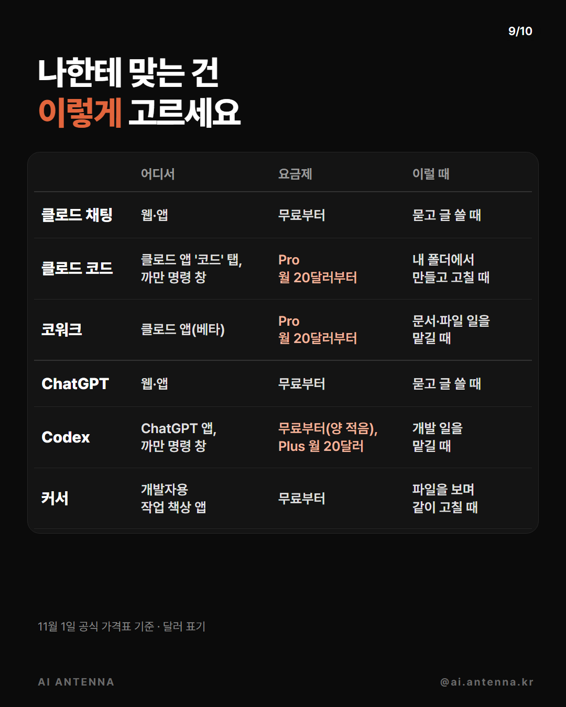
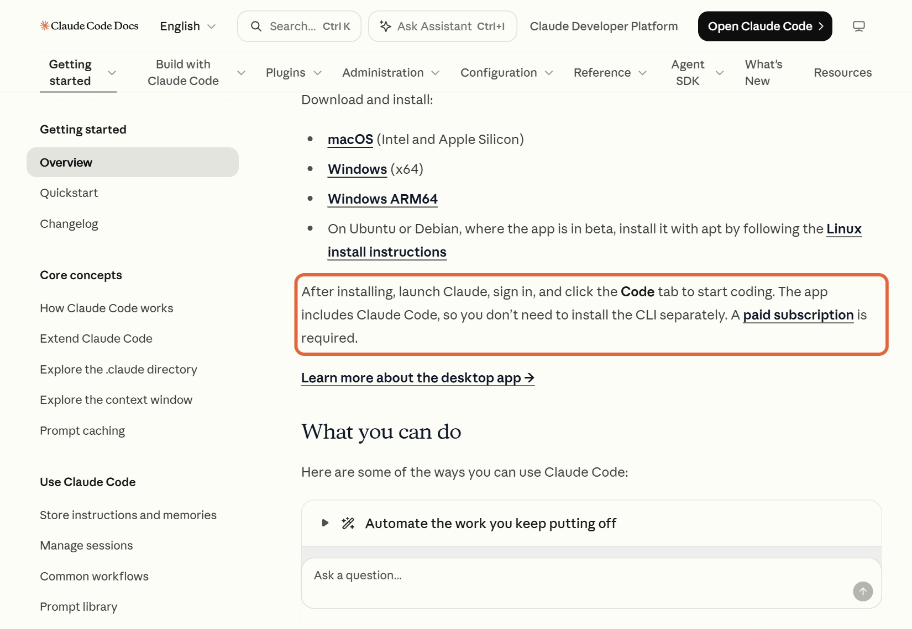
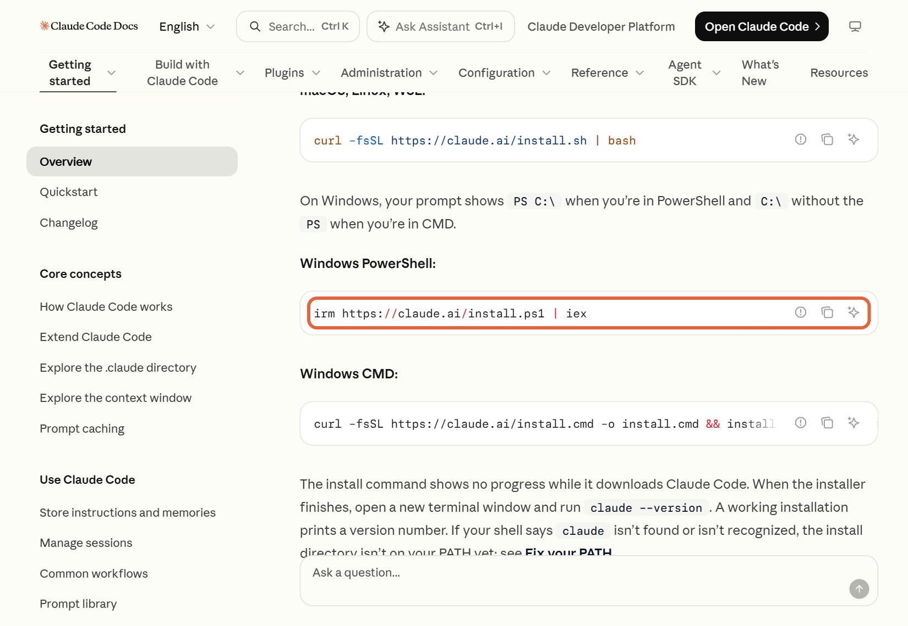
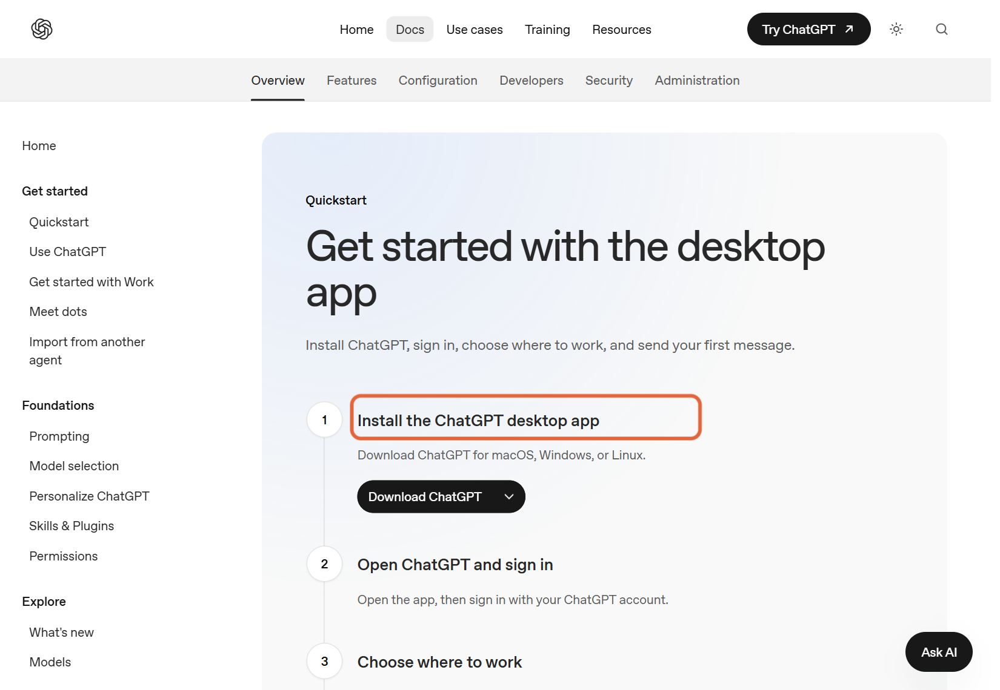
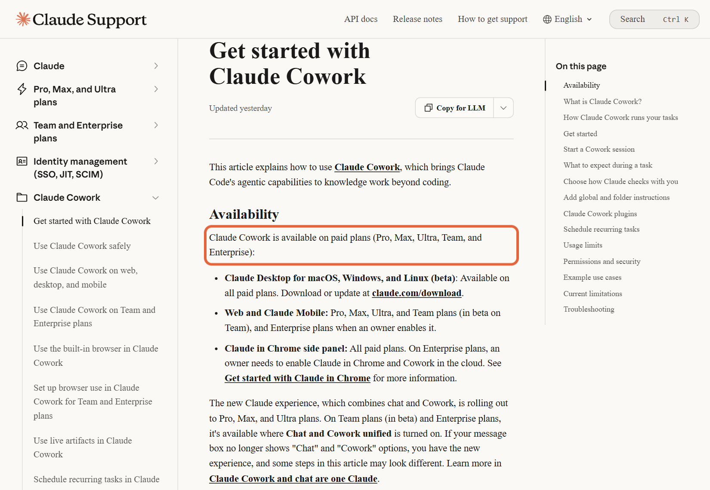
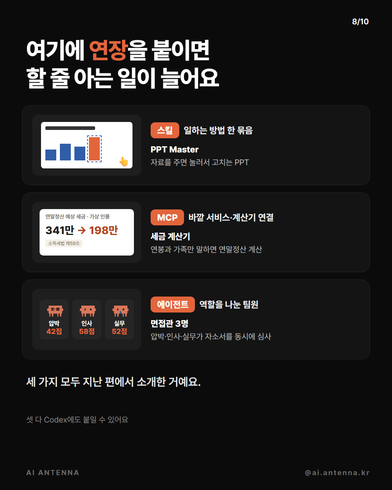

채팅은 방법을 알려 주고, 클로드 코드·Codex는 내 폴더에서 직접 해 둬요. 앤트로픽·OpenAI 공식 문서를 기준으로, 나한테 맞는 걸 고르는 법부터 설치, 처음 해 볼 일 3개와 그대로 붙여 쓰는 요청 문장까지 정리했어요. 요금·화면은 11월 1일 기준이라 바뀔 수 있어요.
묻고 글 쓰는 건 채팅(클로드·ChatGPT)으로 충분해요. 내 컴퓨터 폴더 속 파일을 직접 만들고 고치게 하려면 클로드 코드나 Codex, 개발이 아닌 문서·파일 일은 코워크, 파일을 화면에 펼쳐 놓고 바뀐 줄을 보며 같이 고치려면 커서 같은 개발자용 작업 책상이에요.

클로드 데스크톱 앱(윈도우·맥)을 깔고 로그인한 뒤 '코드(Code)' 탭을 누르세요. 앱 안에 클로드 코드가 들어 있어서 따로 설치할 게 없어요. 폴더 고르는 칸에서 연습용 폴더를 고르고, 아래 '복사해서 쓰기' 문장을 붙여 넣으면 돼요. 유료 요금제가 필요해요.

윈도우에서 PowerShell을 열고 아래 '설치 한 줄'을 붙여 넣으세요. 설치가 끝나면 새 창을 열어 claude --version으로 확인하고, cd 연습폴더 경로로 들어가 claude를 치면 처음에 로그인을 물어봐요. 윈도우에선 Git for Windows를 깔아 두길 공식 문서가 권해요.

ChatGPT 데스크톱 앱(윈도우·맥·리눅스)을 깔고 ChatGPT 계정으로 로그인하세요. 앱 안에서 Chat · Work · Codex 중 Codex를 고르고 일할 폴더를 열면 그 폴더의 파일로 일해요. 같은 요청 문장을 그대로 써도 돼요. 맥·리눅스는 까만 명령 창 버전(Codex CLI)도 공식 설치 한 줄이 있어요.

클로드 앱(웹·데스크톱·모바일)의 메시지 창에서 '코워크(Cowork)'를 고르고 할 일을 적으세요. 새 화면이 적용된 계정은 고르는 칸 없이 채팅에서 바로 맡기면 돼요. 내 컴퓨터 파일은 데스크톱 앱에서, 연결한 폴더만 읽고 써요. 영수증 → 경비 보고서, 메모 → 발표 자료, 파일 이름 한꺼번에 바꾸기 같은 일이 공식 예시예요.

아래 '복사해서 쓰기'의 ①②③을 차례로 해 보세요. 클로드가 무엇을 할지 먼저 보여 주면 읽어 보고 허락하면 돼요. 끝나면 폴더를 열어 결과 파일을 직접 확인하세요.
스킬(일하는 방법 한 묶음), MCP(다른 서비스·계산기 연결), 에이전트(역할을 나눈 팀원)를 붙이면 할 줄 아는 일이 늘어요. 저희 지난 편 PPT Master(스킬) · 연말정산 세금 계산기(MCP) · 면접관 3명(에이전트)이 그 예예요. 셋 다 Codex에도 붙일 수 있어요.

까만 명령 창으로 시작할 때
irm https://claude.ai/install.ps1 | iex
처음 해 볼 일 1
이 폴더 파일들을 종류별(사진·문서·압축 파일·설치 파일)로 하위 폴더를 만들어 나눠 줘. 지우지 말고 옮기기만 하고, 옮기기 전에 어떻게 나눌지 먼저 보여 줘.
처음 해 볼 일 2
이 폴더에 있는 엑셀 파일들을 하나의 시트로 합쳐서 '합친파일.xlsx'로 저장해 줘. 원본은 그대로 두고, 파일마다 첫 줄 제목이 다르면 합치기 전에 알려 줘.
처음 해 볼 일 3
우리 동네 모임 안내 웹페이지를 한 장짜리로 만들어 줘. 날짜·장소·참가 신청 버튼이 있고 휴대폰에서도 잘 보이게. 다 만들면 내 컴퓨터에서 여는 방법도 알려 줘.
도움이 되셨다면
@ai.antenna.kr
에서 바로 쓰는 AI 활용법을 계속 올립니다.